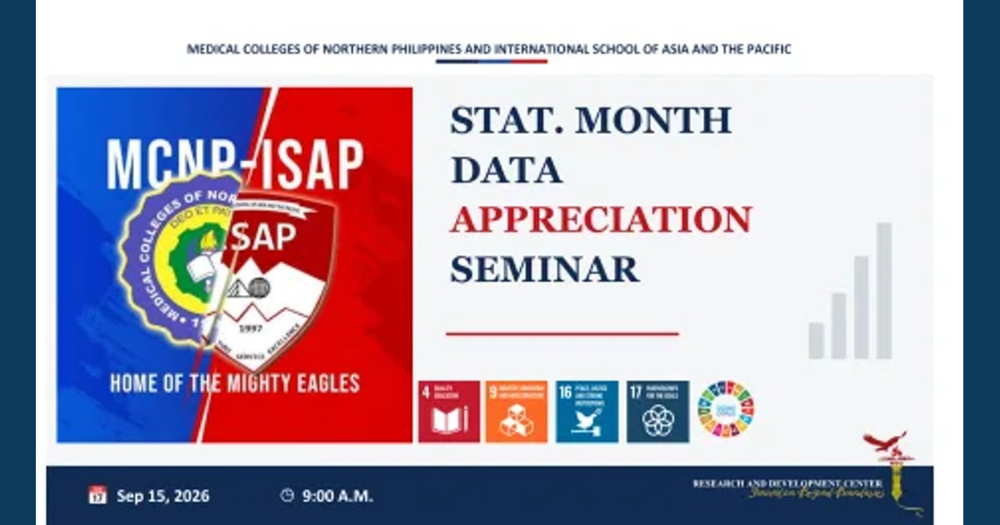

From Numbers to Narratives: Making Data Meaningful

The MCNP–ISAP Research and Development Center conducted the Stat. Month Data Appreciation Seminar via Zoom on September 15, 2026, with first-year students and faculty researchers joining the webinar. The session focused on using infographics to present, interpret, and appreciate data, equipping participants with practical skills to transform complex research findings into clear, engaging, and meaningful visual stories.
Read full article